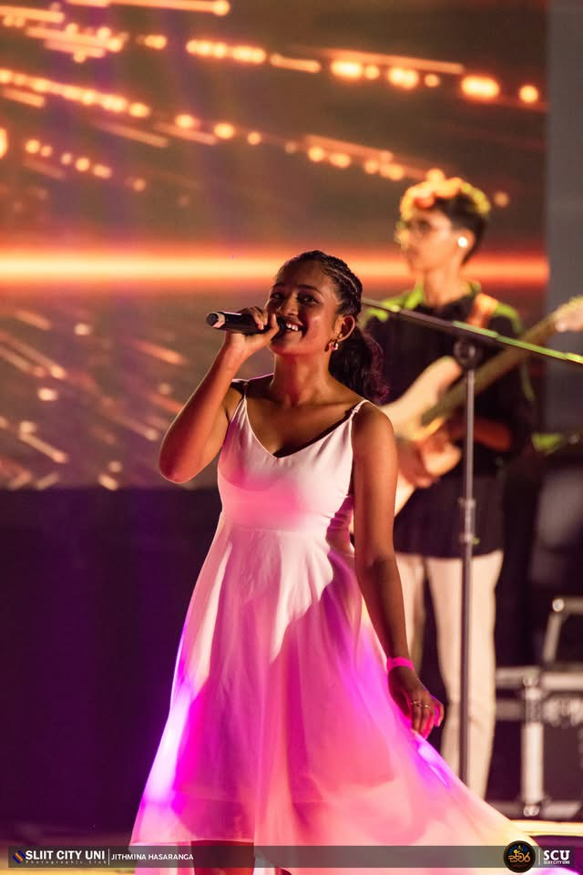
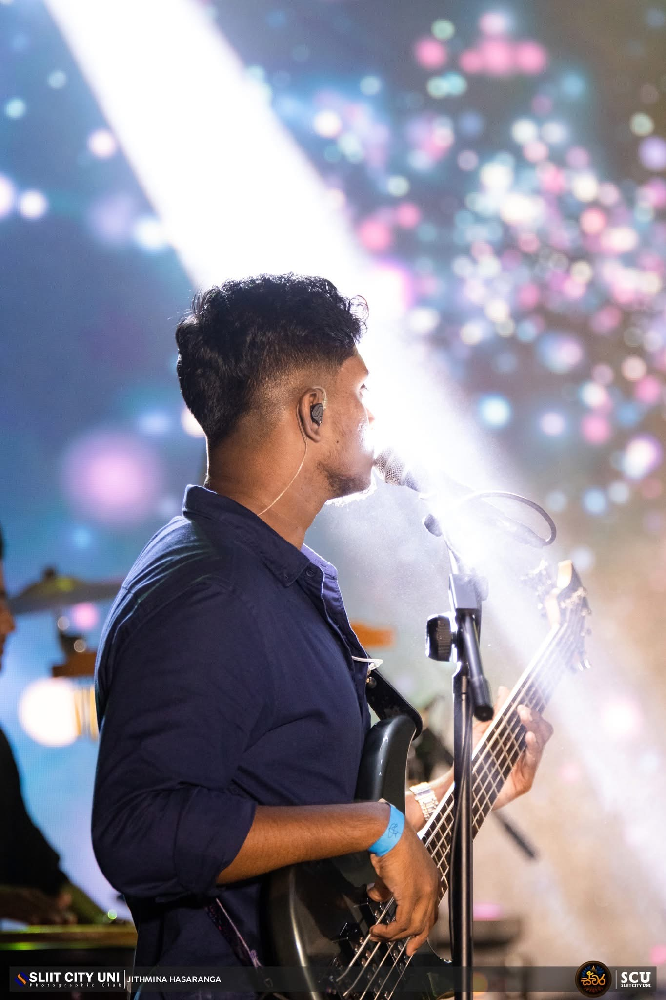
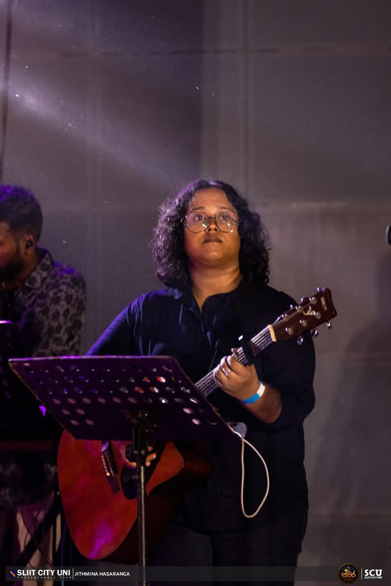

A creative community celebrating music, dance, and visual arts.
Where Creativity
Takes The Stage.
From soulful melodies to powerful performances, we bring ideas to life.
A creative community celebrating music, dance, and visual arts.
From soulful melodies to powerful performances, we bring ideas to life.
Founded with a vision to create a vibrant space for artistic expression, ArtCircle has grown into a creative hub where ideas come to life and talents shine.
Learn More

Creating unforgettable experiences through rhythm and melody.

Bringing stories to life through emotion, expression, and performance.

Expressing creativity through movement, energy, and passion.

From colors to concepts, we turn imagination into masterpieces.

We aim to nurture creativity, encourage collaboration, and provide opportunities for every artist to grow.
Active Members
Events Organized
Achievements
Discover the diverse artistic communities within ArtCircle, where every passion finds its stage.
Express emotions through rhythm, vocals, and instruments.
Celebrate movement, culture, and performance.
Bring stories to life through acting and stage performances.
Transform imagination into paintings, designs, and creations.
Share ideas through poetry, writing, and storytelling.









Join a community of artists, performers, and creators who inspire each other every day.
Complete the membership sign-up section under our contact form and attend our upcoming orientation session. We welcome creatives of all levels, fields, and experience ranges.
All registered student members can participate in our workshops, closed exhibitions, and performances. Public showcases like Swara are open for student audiences and community guests alike.
Not at all! ArtCircle is built to foster growth. Whether you are an established performer, a seasoned painter, or someone who wants to explore a new artistic hobby, you will find resources and mentors to support your journey.